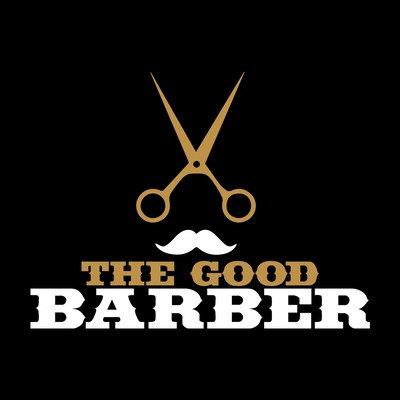
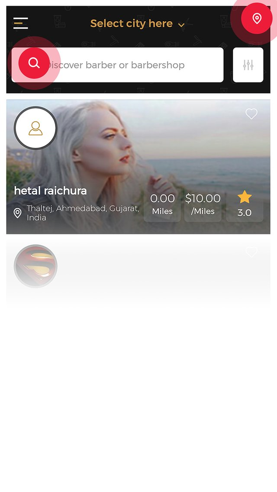
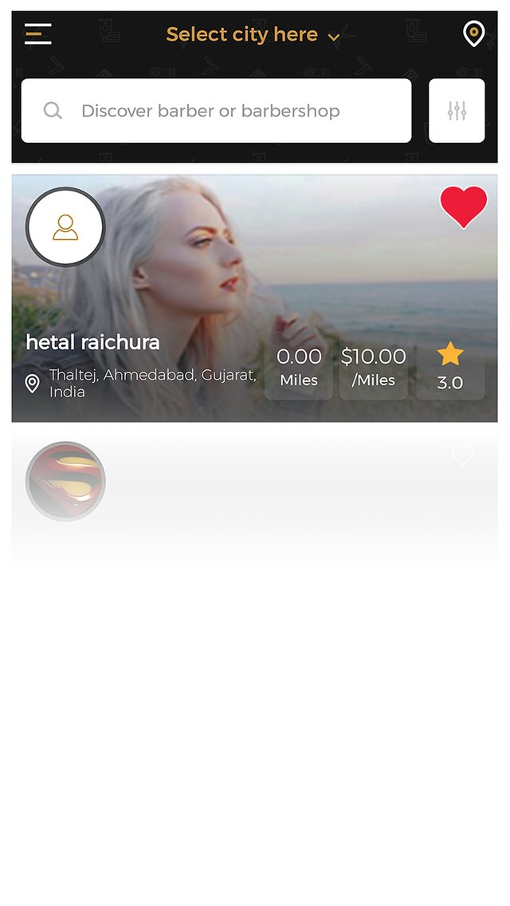
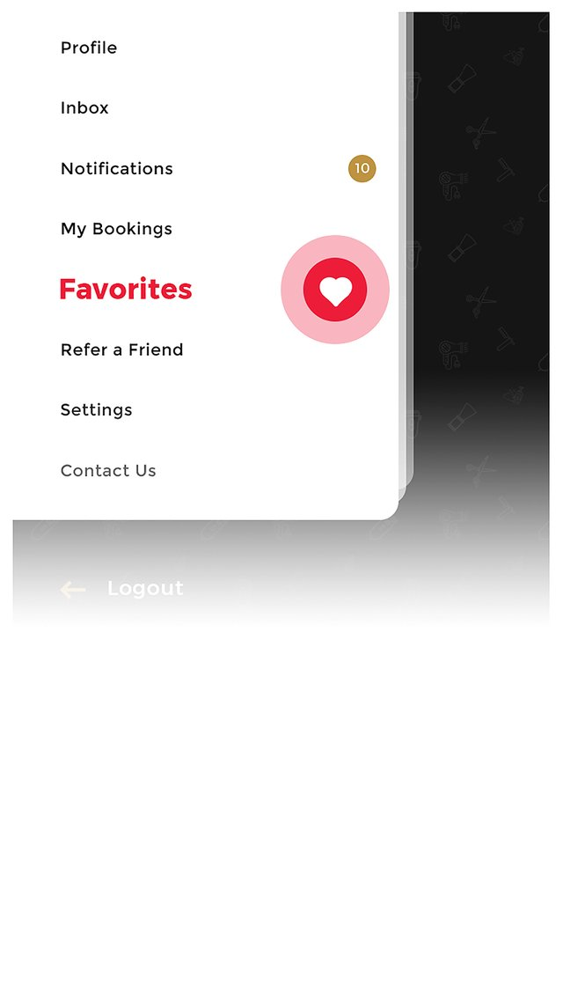

Walkers Software designs and ships web apps, mobile apps, automation systems, and AI integrations for startups and growing businesses — with the rigor of a team that has taken its own product to acquisition.
Full-lifecycle software delivery — from a napkin sketch to a product in your users' hands. We take on a small number of engagements and treat each one like our own.
Product-grade apps across iOS, Android, and web. Marketplace platforms, dashboards, customer portals, and internal tools — designed, built, and shipped end to end.
Systems that remove manual work — API integrations, workflow automation, data pipelines, and platform migrations that cut costs and errors at the source.
Practical machine learning shipped into real products — recommendation, classification, and confirmation layers, backed by honest validation instead of hype.
Fractional CTO and build-partner engagements for startups — architecture, hiring guidance, roadmaps, and hands-on delivery from someone who has founded, built, and exited.
In-house builds across three verticals. When a studio ships for itself, you see exactly what it's capable of.

A complete two-sided marketplace for the barbering industry — one app for clients, a second app for shop owners, and a web platform tying it together. Clients discover barbers, book appointments in real time, message their barber, and pay in-app. Shop owners manage chairs, schedules, staff, and revenue from the business app.
A self-hosted algorithmic trading system that ingests real-time market data from a live brokerage, evaluates 19 independent strategies across multiple timeframes, prices and selects option contracts, sizes positions from risk limits, routes orders, and manages exits — with a full web control plane and a research harness that validates any strategy before it's allowed to trade.
A browser-based health platform with four modules — supplement and compound scheduling with inventory-aware daily protocols, step-by-step skincare routines with automatic schedule variations, a multi-product hair-care protocol tracker, and live Apple Health integration surfacing blood pressure, HRV, SpO2, sleep, and weight. PIN-gated admin, full session persistence.
Enterprise discipline without enterprise bureaucracy. Clear scope, weekly demos, honest tradeoffs.
A working session on your goals, constraints, and users. We scope the smallest version that proves value — and tell you honestly if you don't need us.
System design, stack selection, and a delivery roadmap with real estimates. You approve the plan before a line of code is written.
Agile delivery in weekly increments with working demos — not status decks. You see the product grow every week and steer as we go.
Production deployment, documentation, and handoff — or ongoing support and iteration. Your code, your infrastructure, your call.
Walkers Software Development LLC is an Atlanta-based software studio. We're deliberately small — a lean senior team augmented per-project — because small teams with high standards ship better software than big teams with diluted ownership.
Our leadership carries 15+ years of Fortune 500 engineering — enterprise logistics, financial reconciliation platforms, omnichannel commerce — alongside founder experience taking a product from first commit to acquisition. That combination shapes how we work: startup speed, enterprise discipline.
We build a limited number of client engagements at a time. If we take your project, it gets the same treatment as our own products — the ones we bet our name on.
Tell us what you're trying to do — a product idea, a workflow that's costing you hours, or a build that stalled. We'll give you a straight read on scope, timeline, and whether we're the right fit.
Start the conversation →The Good Barber began with a simple observation: the barbering industry ran on cash, DMs, and no-shows. Clients had no reliable way to find, book, and pay a barber. Shop owners had no software built for how their business actually works — chairs, walk-ins, commission splits.
The answer was a complete two-sided marketplace: a client app for discovery, real-time booking, messaging, and in-app payment — and a dedicated second app for shop owners to run their chairs, staff, schedules, and revenue. A web platform and backend tied the two sides together.



The platform shipped to the App Store and Google Play, operated in market, and was successfully acquired. Terms remain confidential under NDA.
A self-hosted algorithmic trading system built to answer one question with engineering instead of hope: can a disciplined, risk-first framework trade options systematically? The platform ingests live market data, evaluates 19 independent strategies, prices and selects contracts, sizes positions from risk limits, routes orders, and manages exits — all governed by circuit breakers and validated by a research harness before any strategy is allowed to trade.
Paper execution on live market data — real signals, real quotes, simulated fills — across 10 sessions: 166 trades, +$3,953 net, 1.56 profit factor, 2.76× payoff ratio, 7 of 10 sessions green.
A browser-based personal health operating system — one place to run daily wellness protocols that would otherwise live across notes apps, reminders, and memory. Built as a PWA, it works identically on mobile and desktop, persists every session, and adapts each day's schedule to what's actually in stock.